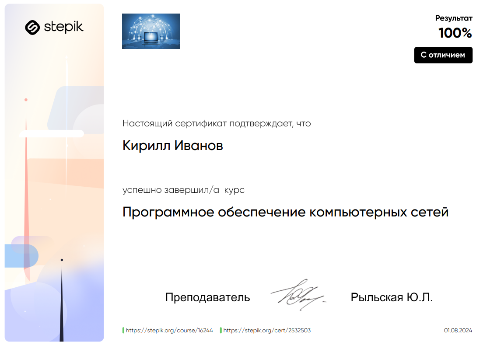
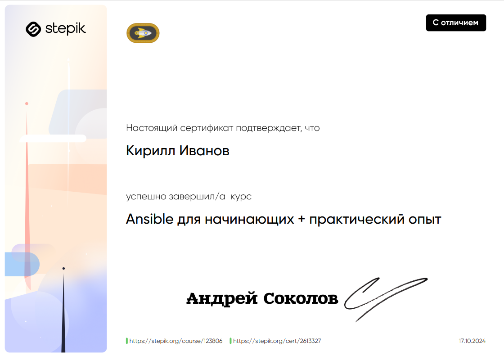

Этот курс погрузил меня в мир теоретических основ эксплуатации программного обеспечения компьютерных сетей, предоставил глубокое понимание принципов и подходов к эффективному управлению и обслуживанию сетевой инфраструктуры.
По окончании курса я получил сертификат, подтверждающий мои знания в области теоретических вопросов эксплуатации программного обеспечения компьютерных сетей. Я имею глубокое понимание принципов работы сетевого ПО и смогу применять эти знания для решения практических задач.
Курс “Профессия — Белый Хакер” стал для меня настоящим погружением в мир кибербезопасности. Он предоставил мне комплексные знания о принципах работы сетевых систем, методах тестирования на проникновение и защите от кибератак. Обучение охватило широкий спектр тем. Благодаря практическим заданиям и работе с реальными сценариями я смог закрепить полученные знания и развить навыки практического применения полученных знаний.
Получение сертификата “Профессия — Белый Хакер” стало для меня подтверждением моих компетенций и открыло новые возможности в сфере кибербезопасности. Я готов использовать свои знания и навыки для обеспечения информационной безопасности организаций и частных лиц.
Курс “Ansible для начинающих + практический опыт” стал для меня отличной отправной точкой в мир автоматизации IT-инфраструктуры. Он помог мне освоить основы Ansible и получить практические навыки работы с этим инструментом. Обучение началось с основ: я узнал, что такое Ansible, как он работает и для чего его используют. Я освоил синтаксис языка YAML, научился создавать playbook’и для автоматизации различных задач, таких как установка ПО, настройка сервисов и управление конфигурациями.
Благодаря этому курсу я смог получить ценный опыт работы с Ansible и значительно повысить свою эффективность в управлении IT-инфраструктурой. Я стал увереннее в своих силах и готов использовать Ansible для решения сложных задач автоматизации.